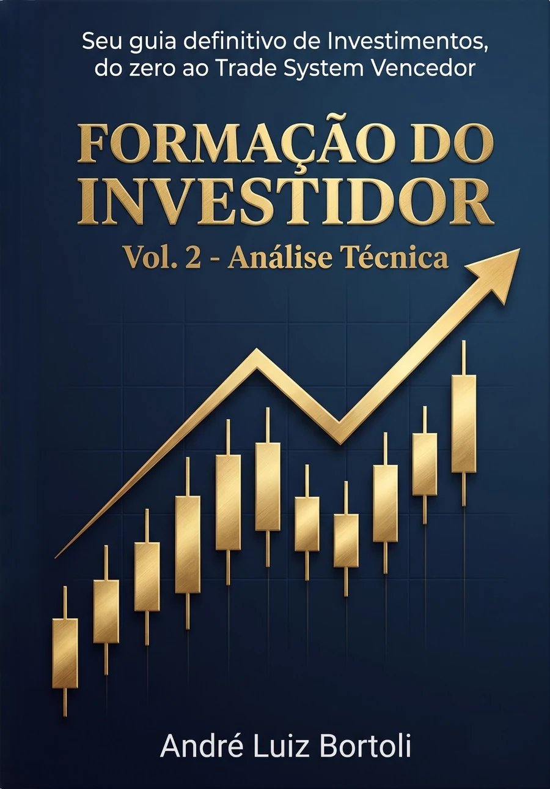
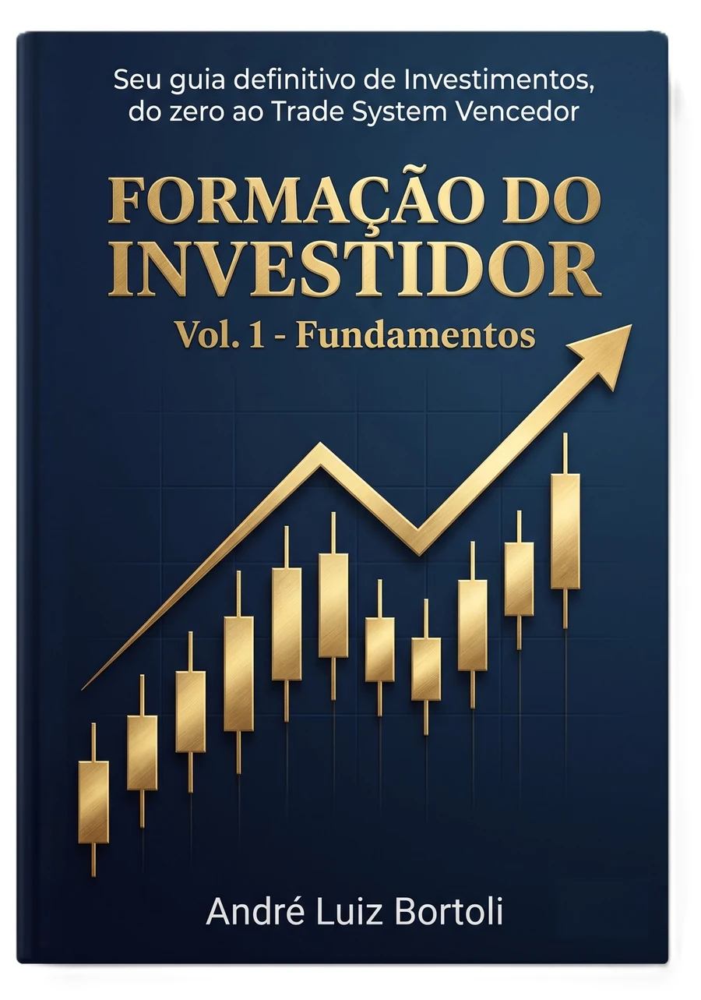
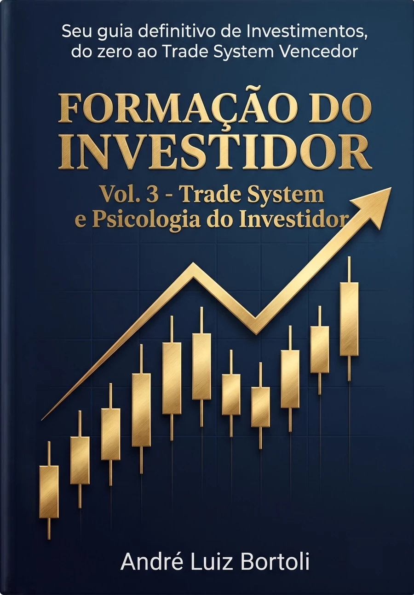
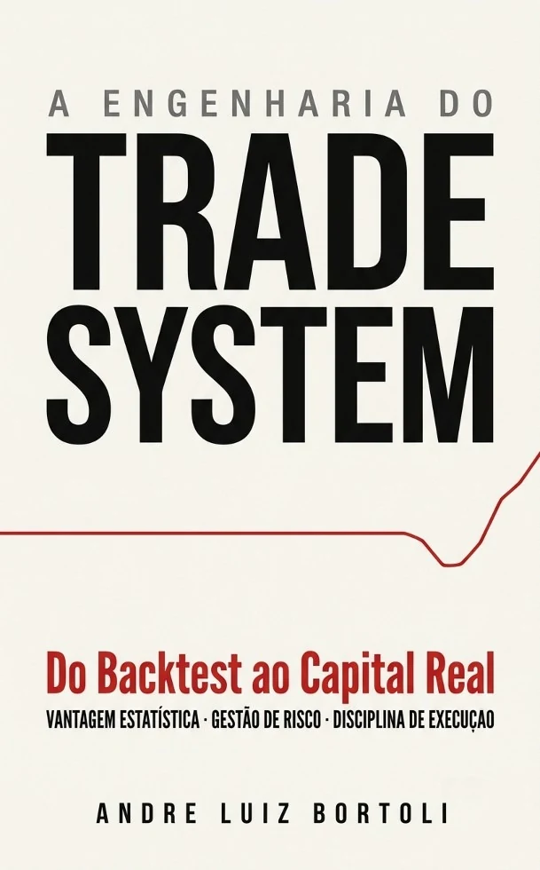

Entenda o valor
Construa uma base sólida para avaliar ativos, risco, preço e qualidade antes de investir.
Conhecimento, método e autonomia
Uma formação que conecta fundamentos, análise técnica, estratégia e comportamento — acompanhada por uma plataforma criada para transformar dados em decisões consistentes.



Uma jornada completaDo primeiro investimento ao sistema próprio.
Formação aplicada
Construa uma base sólida para avaliar ativos, risco, preço e qualidade antes de investir.
Use evidências históricas e filtros técnicos para separar convicção de simples intuição.
Organize carteira, processo e comportamento para atravessar diferentes ciclos de mercado.
Biblioteca Formação do Investidor
Conteúdo progressivo para quem quer compreender investimentos, estruturar processos e transformar conhecimento em ação.
Do zero ao Trade System vencedor
Formação do Investidor • Volume 1
Da organização financeira às classes de ativos, preço versus valor, tributação e construção de uma carteira resiliente.
Um guia para criar bases sólidas, compreender o ambiente econômico e tomar as primeiras decisões com segurança e visão de longo prazo.
Formação do Investidor • Volume 2
Gráficos, price action, médias, RSI, MACD, Bollinger, volume, gestão de risco e construção de um processo tático.
Para quem deseja interpretar o comportamento dos preços, reconhecer contextos e usar indicadores sem abandonar método e disciplina.
Formação do Investidor • Volume 3
Comportamento, vieses, risco, consistência e a engenharia de um sistema de investimento replicável.
Uma ponte entre a estratégia e sua execução no mundo real, com foco no controle emocional e na tomada de decisão consistente.
Obras complementares
Mercado imobiliário
Como comprar bem, multiplicar patrimônio e construir renda no mercado imobiliário brasileiro — do primeiro imóvel ao portfólio completo.
Ciclos, diligência jurídica, financiamento, consórcio, leilões, locação e FIIs reunidos em uma visão prática de construção patrimonial.

Estratégia quantitativa
Do Backtest ao Capital Real.
Validação, Monte Carlo, walk-forward, risco de ruína, dimensionamento e fricções reais para levar uma estratégia além do resultado histórico.
Mudança comportamental
A ciência prática para transformar micro-ações diárias em resultados exponenciais.
Um sistema de ação mínima, gatilhos, indicadores e redução de atrito para construir hábitos sustentáveis e retomar o caminho após recaídas.
Filosofia e individuação
A jornada da individuação além do eterno retorno.
Uma investigação sobre sentido, sofrimento e transformação que aproxima Nietzsche, Jung e Dostoiévski da experiência contemporânea.
Plataforma de Investimentos
Consulte mercados, filtre ativos, organize sua carteira e valide estratégias por meio de backtests em um ambiente único.